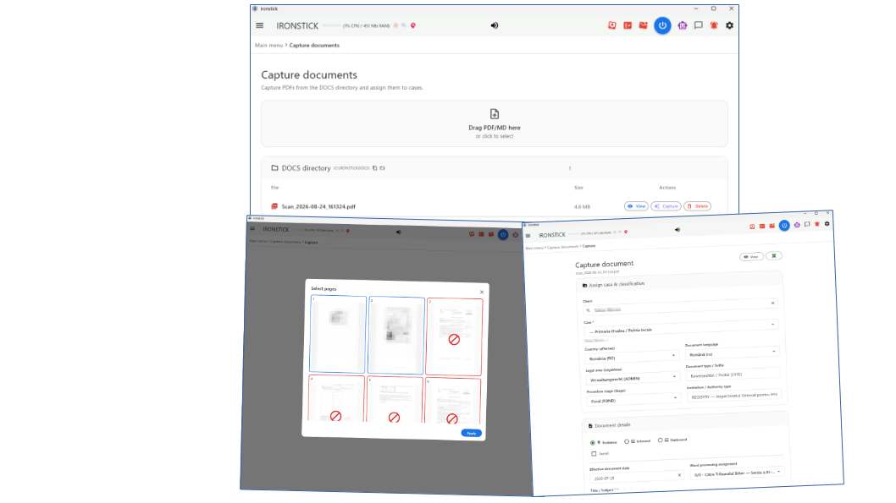

The case-management system with built-in file intelligence —
for lawyers who want their evenings back.
IRONSTICK is a complete law-practice system for Windows and Android tablet:
clients, cases, evidence, deadlines, e-mail, document
production — with an AI layer that actually knows your files. Cleanly
pan-European — and deliberately built for the continental-European
civil-law tradition, the world of codified statutes: available in
eleven languages — English, German, French, Italian, Spanish, Romanian,
Portuguese, Dutch, Turkish, Ukrainian and Russian — the system recognises and builds out legal
jurisdictions automatically, dynamically expands its legal database and
keeps it up to date, and adapts itself to the needs and particular ways
of its user. Offline-first, and your data never leaves your own computer
without your say-so.
Hours become minutesPleading drafts, case summaries
and dossiers are generated from the file itself — your job shifts from
assembling to reviewing.
Nothing gets overlookedEvery document, e-mail, photo
and spoken word is searchable — including scans and phone-call transcripts.
Deadlines and silent cases surface by themselves.
Everything is one question away“What came in from the
opponent last month?” — ask in plain language, get an answer grounded in the
actual documents, with clickable sources.
You stay in controlLocal data, your own storage path,
consent before any external AI call, pseudonymization, audit logs — and a
written GDPR disclosure of every data flow.
What law firms really need — and what IRONSTICK delivers
Need
What IRONSTICK delivers
More
Saving time, billing hours
Pleading drafts, case summaries and dossiers are built from the case file itself — you review instead of hunting. Tested: 3,000 pages of pleadings and annexes, stamped and paginated, as one PDF — in under 20 minutes. By hand, that is a half-day to full-day project.
The bell in the menu bar turns orange when something falls due and red when it is critical — permanently visible. Cases with no activity for 14 days are listed, so nothing dies quietly.
The database lies encrypted on your own medium; the software vendor never sees client data. Consent before every external AI call, pseudonymization, audit log and the GDPR data-flow declaration with a model clause for your client privacy notice. Through the desktop AI bridges, the AI of your own account works live on the case file.
Your firm depends on no one else's data center: the case file lies on your own hardware, and even a total failure of the server or of the internet does not stop the practice. The license is checked offline on your computer, and you can export everything you capture at any time.
Modular license: you buy only the components you use and add more later by license key. The AI runs on your own accounts (typically €20–40 per month each, where a subscription is needed) instead of three-figure monthly per-seat fees. Prices on request.
Your scanner or copier drops into a folder, and IRONSTICK takes over from there. Your e-mail inbox is fetched in the background and assigned to the cases. Appointments appear in the calendar of any phone; the Android tablet works on the same case file.
No big-bang migration: new cases run in IRONSTICK from day one, and you move old cases only when it pays off. With the built-in OCR, a document is captured in fifteen seconds on average. Training on site, one day per module.
—
Knowing the opponent, the judge and the surroundings
OSINT at the push of a button on every person and company, judge profiles with an evaluation of their decisions, and a relationship analysis across all files — who is connected to whom, and why. Pleadings can be tuned to the judge who reads them.
IRONSTICK pays off wherever many documents, many parties and hard deadlines come together — and where client data must not leave the building. The firms that gain most are those that lose hours today searching, typing and assembling.
Solo lawyers and small firms. No IT department, no budget for technicians: IRONSTICK runs on an ordinary Windows computer, maintains itself and takes over the work that would otherwise need a second pair of hands.
Litigators with extensive case files. Whoever handles thousands of pages of evidence queries the file in natural language and gets substantiated answers with sources. Court dossiers are built in five guided steps, Bates-numbered and indexed.
Commercial, insolvency and criminal lawyers. These proceedings involve many persons, companies and entanglements. The network of persons and companies across all case files makes connections visible that could never be tracked by hand — right down to OSINT profiles of every person and judge profiles with an evaluation of their decisions.
Part I — The daily practice
1. Your morning, in ninety seconds
Open IRONSTICK and the day is already sorted. The start screen shows what is
due and what went quiet; the Agenda merges everything that happened
across all mandates — yesterday's filings, overnight e-mails, new court dates,
photos, transcripts — into one chronological feed. You see the whole practice
without opening a single case. And beyond that: the separate daily
briefing gives you a short spoken overview of the day — while you
comfortably fetch yourself a coffee.
The main menu: deadlines, dormant cases and every section — at a glance, before you open a single case.
Deadlines with a traffic light. The bell in the menu bar turns
orange when something comes due, red when it is critical — permanently visible,
one click to the full list.
E-mail already triaged. The monitor fetches your inbox in the
background, assigns mails to cases (a known registry number is matched without
any AI at all) and prioritises the rest. New post announces itself in the menu
bar.
Silent cases and flare-ups. Cases with no activity for 14 days are
listed so nothing quietly dies; cases that suddenly heat up — new deadline,
imminent hearing, official post — carry a 🔥 marker until they calm down.
2. Instant case summaries — ask, don't dig
The case assistant answers questions about your files the way a good
associate would — except it has read everything, and it answers in
seconds:
“Summarize the state of play in 5678/000/2026.”
“Which letters came from the opponent, and did we answer the last
one?”
“Who said what about the site inspection — any contradictions?”
“Have I already filed this exhibit with the court?”
Every answer is grounded in real documents — numbered hits you can
open with a word (“open 1”, “read 1 aloud”). Routine questions are answered by
a local layer on your own machine, without any data leaving the device;
heavier analysis escalates to external AI only with your consent. The
assistant speaks your language — all eleven of them — and can be driven entirely
by voice, hands-free, with offline speech recognition and read-aloud.
The assistant does more than read: it verifies. Personal ID
numbers, IBANs, VAT numbers (live against the EU VIES system), EORI, LEI and
business-register entries are checked on request — before a wrong number ends
up in a pleading.
3. From case file to a submission-ready template — in minutes
This is the flagship. You write pleadings and letters in dialogue with
the AI — in IRONSTICK's own chat (on your API key) or through the
desktop-AI bridge (Claude, ChatGPT, Qwen or Kimi Desktop). Compose text ›
With AI help in a case opens the chat with the case and the document
already named; from there the AI works like an associate on the live file:
client master data, the case chronicle with document full texts, deadlines,
related exhibits, the annex list, your case instructions — and even the recent
history of the client's neighbouring cases, because the opponent's
answer often sits in the parallel file. It asks back when something is open
instead of pressing your case into fixed masks.
Research instead of assertion. While drafting, the AI actively
searches the file. It is not allowed to claim “no reply was received” unless a
search has proven it.
Verification before hand-over. A deterministic scanner checks the
finished draft against the live file: every evidence reference, every party,
institution and file number, every statute citation against the verified law
library. Contradictions block the hand-over; internal file stamps never leak
into the document.
Red/Blue Team, built in. On request a second model reads the draft
as opposing counsel before hand-over: substantial findings send it back for
rework, up to two rounds — and every point is analysed on the merits, never
adopted blindly.
A submission-ready template — never a finished filing. The result
arrives through IRONSTICK's export dialog and lands in the built-in word
processor with one click: A4 pagination, your letterhead (first page or every
page), page-break control, signature placement, annex list taken over
automatically — print, PDF, DOCX or Markdown. You review, correct and sign;
the responsibility for what is filed stays with you.
Hours of file study and drafting become minutes of review —
you read, sharpen, sign.
4. Detail gain — a file that remembers everything
The heart of IRONSTICK is evidence intelligence. Everything you capture —
scanned PDFs, e-mails with attachments, WhatsApp histories, photos, audio
recordings — becomes searchable full text. OCR is built in (English,
German, French, Italian, Spanish, Romanian, Portuguese, Dutch, Turkish,
Ukrainian and Russian — nothing to install) and the search is deliberately forgiving: diacritics,
typical scan errors and partial names still find their target.
Annexes and filings, proven from the paper itself. When a document
is captured, IRONSTICK reads which of your exhibits it physically contains and
which registry numbers it carries. The chronicle then shows, on every exhibit:
filed with the court on … in case … — and on every outgoing letter, its
full annex list. “Did I already file this?” has a one-click answer.
Letter-number chains. Every registry number links all documents of
the same procedure into a chronological chain — the documented history of who
wrote what, when, and whether it was ever answered.
Media with substance. Photos keep their capture location (one click
to the satellite view), phone recordings become speaker-labelled transcripts —
all of it searchable, all of it citable evidence.
Cross-case awareness. Conflict-of-interest check on intake, warnings
when the same opponent appears in several mandates, a relationship graph of all
parties, and a relevance radar that finds related material you did not think to
look for.
The network builds itself. A desktop AI connected via the Bridge reads the file,
researches the parties on the internet and files every person, company,
institution and connection it finds as a one-click-to-approve proposal; a
background auto-linker ties every party to every case whose documents name it;
and the Universe turns the whole inventory into a fly-through 3D network
with automatically detected clusters — dense, tightly interwoven groups pulse
red. In hours you hold a highly condensed person-and-company network across your
entire data set — impossible by hand — and the visualization points straight at
the cluster.
What this means in practice — two days, measured. Over two working
days in September 2026 a single desktop AI connected via the Bridge read the files of a
multi-party proceeding, researched the parties on the internet and filed what it
found; the lawyer did nothing but read and click. The result, counted afterwards
in the database: 293 persons and companies, 11 institutions, 811 relationships
and 733 party-case links — 2,487 review decisions in total, 97 per cent
accepted, 3 per cent rejected at the gate. By hand — sources read, every
person identified, every connection checked, every record typed — that is about
310 working hours: eight full-time weeks for one person, or half a year
alongside live mandates. And the hours are not even the point. No one holds 300
names, 800 connections and a dozen friend lists in their head; the clusters that
glow crimson in the Universe are invisible in the filing cabinet. The 3 per
cent are why the review gate exists: each one would have been a wrong record had
it been written straight through.
And the same machine draws a client's case-net: cases as hexagons,
grouped by your own matters, connected where they share parties, cite each other
as an exhibit or name the other's case number — with four AI tools that read
exactly this picture.
OSINT at the push of a button — built-in research on persons and companies
OSINT (open-source intelligence) — the systematic evaluation of freely
accessible sources — is standard practice in investigative authorities and
commercial law firms, but it is manual work: everyone researches differently,
and everyone forgets something different. IRONSTICK turns it into a fixed
procedure. The AI hands over name, city, district, country and whether it is a
natural or a juristic person — the application does the rest itself, the same
way every time, without gaps:
Your own files first. A deterministic full-text search for the name
across the entire inventory, all clients: per case the ten newest finds with
paragraph and character position — and a note how many more there are.
Case-specific research material such as commercial register extracts, land register extracts and the like: simply file it in the case file and tell the LLM to take it into account as well.
Then the internet, on a fixed grid. CV, Facebook, LinkedIn,
Instagram, city, district, scandals, press reports, declarations of assets and
of interests, taxes, company holdings — for companies the commercial register
and insolvency. The search terms are automatically in the language of the
target's country: for Romania “declarație de avere”, not
“declaration of assets”. This happens in the background via the client app, fully automated: the LLM receives a complete OSINT profile to work with. That is far more accurate and far cheaper.
Three search engines at once. Google, DuckDuckGo and Qwant work
through the grid in parallel; the hits arrive as one cleaned list without
duplicates. If one engine blocks, the others keep delivering.
A prepared profile — not a verdict. The AI receives both lists
together with the search terms already covered, opens every find and every
link one by one, sorts out namesakes and places only what is substantiated as
a proposal in the data monitor. What is adopted is what you release.
The result in one to two minutes: a research profile that would cost a
staff member half a day — and that is just as complete for the three-hundredth
person as for the first. Only publicly accessible sources are evaluated.
This is what no one else has
We know of no other product that keeps a full relationship database of
persons, companies and institutions at the level of the individual person,
breaks it down to the single case file and the single exhibit, draws it cleanly
for the lawyer and lays the same picture before the AI as text — together with a
person analysis of 24 fields per person that can only be changed with
proof.
Classic practice software keeps parties as an address book with a role in the case: no graph between them, no person analysis, no clusters, and their AI assistants read documents, not the network. The AI legal assistants on the market sit over the file in the provider's cloud, with a model you cannot choose. The large investigation platforms have the graph and the profiles, but as authority and corporate tools with a consulting project, without a case file in the lawyer's sense and without an interchangeable AI that reads them. A firm running criminal and civil proceedings with dozens of parties and interwoven cases falls between these markets. That is exactly where IRONSTICK sits.
Judges and actors — who with whom, and why
This knowledge does not apply to a single case only. It covers every party, every relationship and every role a person has ever played in one of your files, across cases and across clients — who sits on which board, who signs for whom, who appeared in which proceeding as witness, opponent or office-holder. It grows by itself, every day, while lawyer and AI work the files, and falls out as a by-product of daily case work.
Relationship analysis — who with whom, and why. Every connection between persons, companies and institutions stands with the evidence that carries it; dense webs are automatically detected as clusters. You see not only that two parties are connected, but through what.
Judge profiles. Every decision in your files is attributed to the judge or prosecutor who made it — from the heading and the signature block, not from guesswork. Added to this is the OSINT research on the person: career, public statements, connections to parties and law firms.
Judgment evaluation per judge. How does a particular judge decide, what do they respond to, what do they take up from the pleadings and what do they pass over? IRONSTICK breaks every decision down into its parts and measures which share of the reasoning comes from which party's submissions — the basis for assessing a judge's line and predictability.
Pleadings tailored to the judge. A pleading can be tuned to the individual judge or the panel that will read it — composition, prior decisions and positions, connections to the parties and, where present, grounds for recusal — because you know what runs in the background and who is with whom.
Making cooperation visible. Any two pleadings, even from different proceedings and mandates, can be set side by side word for word: identical text blocks show which lawyers work together.
In court that is the difference between presenting a case and knowing the field: every document can be aligned to the actual web around the case — who is connected to whom, who is beholden to whom, who previously sat on which side — because the lawyer always knows where everything is. In this concentrated form this knowledge exists nowhere else; by hand it simply cannot be compiled.
The Universe after two days of automatic capture: every party of the data set as a node, weighted by connections, grouped into clusters — the dense, tightly interwoven ones pulse crimson. Not a single name was typed by hand.
5. A document system built for court
IRONSTICK is also a full DMS — one that thinks in exhibits, stamps and page
numbers rather than folders:
Capture with AI pre-fill. Drop a scanned PDF into the inbox: OCR
runs, the AI proposes title, type, parties, case assignment, date and deadline
— you confirm instead of typing. Every captured file gets a cryptographic
integrity fingerprint, so later manipulation is provable.
Stamping & pagination. Merging, Bates numbering, file stamps,
metadata cleaning — every produced PDF carries a searchable text layer, so the
finished document can be searched and quoted without ever re-running OCR.
The dossier assistant. A guided, five-step path from chronicle to a
submission-ready case dossier: choose entries, cover sheet and jurisdiction, preview
with page thumbnails, then a finished PDF with table of contents and Bates
numbers — plus an EDRM evidence ZIP for eDiscovery hand-over.
Redaction that holds. Category switches (clients, names, places,
amounts, ID numbers, IBANs …), a local finder that marks candidates, manual
marking on the page — and on export the redactions are burned in
irreversibly, with a clean searchable text layer over the top.
Mail dispatch for oversized files. A large PDF is split losslessly
into court-mailbox-sized parts, each with a ready-made delivery e-mail in the
document's language — copy, attach, send.
Large-scale filings — 3,000 pages, stamped and paginated, in under 20 minutes
In civil procedure and large-scale litigation this goes straight to the
biggest pain points of lawyers and their staff — time, error rate and manual
labour:
Massive time savings. What normally is a half-day to full-day
project for a paralegal or the lawyer himself — assembling and merging PDFs by
hand, checking pages, stamping every page manually (Bates numbering) — runs
here fully automatically in about 20 minutes.
Freedom from errors & consistency. With more than 2,000 pages,
manual work quickly produces mistakes: slipped stamps, wrong page numbers on
annexes, missing links, missed formatting rules. An automated pipeline
guarantees an absolutely clean, uniform layout.
No system crashes. Standard office software and ordinary PDF viewers
go to their knees on a 700 MB package with 3,000 pages the moment you try
to work through it fluently or re-paginate it.
Competitive edge through speed. Under enormous deadline pressure —
shortly before a claim or reply deadline expires — such a solution puts massive
pleadings including all evidence on the table as a submission-ready template in
record time.
Tested. 3,000 pages of pleadings, annexes mixed text and
image, stamped and paginated, output one 700 MB PDF — in under
20 minutes.
Part II — AI at full depth
6. Your desktop AI, plugged straight into your file
The lawyer’s little friend: the AI assistant that helps them get their work done far more efficiently.
For deep analytical work, IRONSTICK offers something no export folder can:
a live bridge between your own desktop AI — Claude Desktop, ChatGPT
Desktop, Qwen Desktop and/or Kimi Desktop, each a separately licensed add-on — and the
running application. The AI reads the current file state through 170 purpose-built
tools — chronicles, full texts, e-mails, deadlines, master data — and
works at full depth:
“Read the whole case and tell me where our position is weakest.”
“Draft the appeal in our pleading format and hand it over to the word
processor.” — the draft appears in IRONSTICK, ready for letterhead
printing.
“Compare the three expert opinions and build me a contradiction table.”
Built for large files — why a live bridge beats any file export.
The subscribable bridge add-ons exist for one purpose: working on large
data pools that demand analysis at full detail. They are highly
controllable by you — switches, consent gates, per-AI licensing — yet every
dialog and every evaluation stands on the entire IRONSTICK data pool as
its foundation. That detail density is simply not reachable through a
conventional file feed (exporting Markdown files into an AI chat): even the
largest AI context windows hold only a few megabytes of text at once —
Model / platform
Context window (tokens)
≈ text capacity
Claude (Opus / Sonnet)
1,000,000
~2,500 KB (2.5 MB)
ChatGPT (app, Plus)
256,000
~1,000 KB
ChatGPT (app, Pro)
400,000
~1,600 KB
ChatGPT (API maximum)
1,050,000
~4,000 KB (4 MB)
— while a grown case archive is many times that. The bridge sidesteps this
ceiling: instead of stuffing files into the window, the AI is handed
more than 170 dedicated tools with strict instructions on how to use them, and
fetches precisely the passages, documents, e-mails and deadlines it needs,
exactly when it needs them — fresh from the live system, across the whole
pool. The context window then carries the analysis, not the ballast.
And when the task really is “read everything”: with a single call
the AI stages the entire case — untruncated, OCR-normalized — into a
local work area and then reads it piece by piece, without ever pushing the
whole file through the window. A 400-document case becomes fully readable;
truncation caps protect the chat, never the staged copy. The same area gives
the AI a one-call session start — date, language, your current screen,
the daily briefing, deadlines and open tasks in one protocol — and a
freshness guard voids any staged extract the moment the underlying
file changes: the AI can never argue from yesterday's data.
Why a raw LLM alone fails on large files — and why IRONSTICK flips the game
A language model on its own is simply outmatched by a grown case file — and
a bigger context window (1 or 2 million tokens) does not fix that. This is the
fundamental misunderstanding of the current AI wave:
The “lost in the middle” phenomenon. Feed a model hundreds of raw
pages at once and its hit rate for details collapses: facts from the middle of
the file get “forgotten” — or hallucinated.
The context-gagging effect. A single tool return flushing 50,000
characters of full text into the chat clogs the conversation: the model loses
orientation, the context overflows, everything gets slow and expensive.
No memory, no structure. A bare LLM knows nothing of deadlines,
file numbers, parties, Bates stamps or the chronology of proceedings. It sees
one long string of characters.
IRONSTICK does not make the LLM a pack mule carrying mountains of paper —
it makes it a precision surgeon:
Structure first. Before the AI sees a single word, IRONSTICK has
already structured the file: documents classified, dates indexed, OCR
repaired, annexes linked.
Decoupling through tools & scratch. Via more than 170
specialised tools the AI fetches precisely what the question needs — and when
a return value is huge after all, a hard limit automatically diverts
everything beyond the connector limit into the local scratch vault — AES-256
encrypted on disk, readable only through IRONSTICK's gate. The chat stays
perfectly clean.
Persistence & recursion. Through the shared AI memory and the
automatic daily protocols no analysis result is ever lost: the AI builds
knowledge over weeks instead of starting from zero with every prompt.
The bottom line: a raw LLM without a system is a brilliant jurist
handed 5,000 loose, unsorted sheets and told to find the decisive line in
five seconds. IRONSTICK is the infrastructure that turns that jurist into a
functioning high-performance practice.
Set-up is one button per AI in the configuration; a skill plugin teaches
the AI your binding output formats. What the AI learns about a mandate is kept
in a shared AI memory — compact, client-bound, visible and deletable by
you alone. And you always see what is happening: whenever an AI reads your
file, its symbol lights up in the menu bar.
First access per program run requires your explicit consent;
documents marked secret are invisible on this channel; suggestions from the AI
never write into your records — they wait for your approval in the Data
Consistency Monitor. Chronicle entries arrive as a prefilled capture form —
you add photos if you like and save it yourself.
The bridges run in parallel. If several add-ons are
licensed, Claude, ChatGPT, Qwen and Kimi can be connected at the same time and even
work on the same case simultaneously — sharing the same file state, the same
AI memory and the same review gates, while the menu bar shows one pulsing logo
per active AI, so every access is attributed to the AI that made it.
Several minds, one case — a built-in board of advisers
This is where it becomes more than a chatbot. Because the bridges can run
at once, you put independent AIs on the same file and let them check
each other's work — with IRONSTICK in the middle as shared database and
coordinator. The decisive point: Claude, ChatGPT, Qwen and Kimi are different
models with different training, so you get genuinely different opinions
and approaches — a real second opinion, not one model nodding at itself.
Today these are among the strongest AI models in the world; IRONSTICK
puts them, side by side, on your case.
Several independent AIs on the same case — a board of advisers checking each other’s work.
You direct them in plain language, like a partner steering two associates:
„work this out… now give it to the other one to check… bring me its
assessment… revise." The draft, theory or pleading is handed over through
IRONSTICK, the second AI reviews it critically — tasked to find weaknesses,
counter-arguments and errors, not to praise — and its assessment comes back to
you. Both stand on the identical case data, and the entire exchange is
logged (forensically clean).
This two-headed adviser/forensic team is ideal for:
Developing theories of the case — build one, have the other stress-test it.
Pattern recognition across the file — two models catch what one misses.
Working out tactics and strategy — proposal and counter-proposal.
Drafting and hardening pleadings — write, review, rebut, refine.
Cross-checking your general lines of reasoning — before the opponent does.
A file that heals itself — you as the precision instrument
Old capture mistakes and botched scans stop being permanent. When the AI
hits a stored full text that is truncated or ruined by a bad OCR run, it does
not quietly work around it — it heals the record: it requests a fresh,
page-accurate re-scan of the original PDF (you pick the pages in the familiar
page picker), compares the new scan with the stored text passage by passage,
repairs only mechanical scan damage — never rephrasing; numbers, names and
amounts stay untouched — and hands the healed full text back. You see it in
full, and only your click saves it. The archive gets cleaner with every
week you work in it.
Where even a fresh scan hits physical limits, the AI turns you into
its precision tool — Human-in-the-Loop Micro-Sourcing: instead of a
useless “file could not be processed”, it opens the entry, names the exact
spot (“page 12, near the top”) and asks you to type off precisely the three
illegible words — or, within hard limits (10 MB, 90 pages), to hand it
the original PDF via the paperclip so it can read the scan with its own
vision. You never comb through a 200-page file; you are called in for exactly
the 0.1 % a machine cannot resolve with certainty. Traditional systems
know two states — “success” (however wrong) and “error, please process
manually”; this is a symbiosis of AI speed and human eyesight that, in this
form, exists nowhere else on the market.
Part III — Sovereignty: why not a cloud
7. The hallucination firewall — unique, to our knowledge
The one justified fear about AI in legal work: models invent citations,
misquote figures, and claim to have read files they merely skimmed. The
industry answers with prompts and disclaimers — IRONSTICK answers with
architecture. Your desktop AI works on your file through 170
purpose-built tools, and every path to an outgoing document leads
through deterministic gates: pure logic, no AI checking AI.
Read proof. The system records, line by line, what the AI
actually read of your file. Unread ranges are held against it in every
answer — and delivery stays locked while gaps exist. “I read
everything” stops being a claim and becomes a measurement.
Citation provenance. Every evidence reference must point to a
real record the AI demonstrably fetched and fully read in this working
session — citing from search snippets or from memory fails
verification.
Statutes only from a verified library. Cited articles are
checked against the letter of the law stored in your own verified library;
new sources enter it only through your consent dialog. An invented article
number blocks delivery.
Zero tolerance for numbers and names. Amounts must match the
record to the comma, party names to the diacritic; personal and bank
identifiers run through checksum validators — an impossible CNP or IBAN
can never reach a court.
Delivery only against attestation. A formal pleading is refused
unless a fresh verification of exactly that file state came back green —
every edit voids the attestation, and five failed rounds abort the loop
and notify you. Every delivered document carries its verification
stamp.
No side doors. A letter declared “informal” is
content-checked and rerouted through the formal gates; renaming a document
to reset its version count is refused; statute knowledge from press
articles or the model's memory fails verification — only the law's own
text, demonstrably read from the library in this session, grounds a
citation; and every answer about a case carries the case's true subject
from your records, so context invented from another case refutes itself
on the spot.
And you are never locked to one AI vendor. The
built-in AI runs on Gemini, Qwen, Kimi, ChatGPT and Claude — five
look-alike sections in the configurator. Gemini needs no API key at all: one
sign-in with your Google account and it runs on your Google AI plan (Windows).
And IRONSTICK saves your money by itself: every provider you have set up
is used automatically, cheapest first — Gemini, then Qwen, Kimi, ChatGPT,
Claude. At every start the program checks which of them respond; if a quota or
credit runs out during the day, it silently carries on with the next one and
checks again the next day. No selector, no interruption, no lost work. The
desktop side offers Claude, ChatGPT, Qwen and Kimi. If one provider disappoints
on price, policy or performance, you simply remove its key — the gates, and
therefore the delivered standard, stay identical.
The IRONSTICK way
What this means for your choice of AI: with these
gates in place it becomes almost irrelevant how strong the connected model
is — a weaker model simply needs more correction rounds. The difference
you feel is mainly execution speed; the delivered result has to meet the
same enforced standard either way.
Checking is not enforcing. The market has begun
to advertise “citation checking” — in practice a best-effort
annotation service: look up citations, add references “where
possible”, then hand the document back either way, through the
vendor's own cloud, with the responsibility parked at the lawyer.
IRONSTICK's verification is a compiler, not a suggestion: sixteen
deterministic gates, one blocking verdict, an attestation bound to the
exact file state — every edit voids it — and no formal document leaves
without it. Others annotate; IRONSTICK enforces.
To our knowledge, no legal software in the world enforces this
combination. Observability tools log after the fact, sandboxes fence off
access — IRONSTICK proves the work, at the only interface the AI has.
If you would like to know more about how the internal AI chat and the bridge for Claude, ChatGPT, Kimi and Qwen work, and which possibilities the IRONSTICK way opens up, click here.
The classic way
To this day, AI assistants work without any connection to the database holding your cases and client data — the only way in is uploading files. Most cloud-based systems work this classic way too: at best they shuffle text files around in the background — invisible to the user. At best, then, the AI draws only on the information in exactly these uploaded files. With a little luck they are not too large and the AI takes everything into account; otherwise hallucinations are pre-programmed. The AI cannot access the case itself: it works blind and tries to get the best result for the user. That can lead to dangerous misjudgements and false statements.
Additional skills and plug-ins change nothing about this. In the worst case they even make it worse: their extensive instructions take up a considerable part of the context window before the AI has read the first document — and the fuller that window is, the more unevenly the AI takes into account what is in it.
8. The structural problem of SaaS — and the IRONSTICK answer
With cloud practice software you hand your responsibility and your
data to strangers — and hope their cloud never burns. IRONSTICK means
maximum sovereignty: the system is constructed so that even a total
failure of the server — or a hijacking of the infrastructure — cannot stop
the practice.
SaaS solutions sell the promise of security — this architecture
delivers native, structurally enforced security. Classic cloud and
SaaS practice solutions carry a gigantic structural problem their
marketing brochures prefer to conceal: they are highly
centralized. IRONSTICK is democratic and absolutely
decentralized.
The attacks that bring down centralized platforms stop here, in the shield — the practice keeps working.
The central single point of failure. When a SaaS provider is
hacked — a supply-chain attack, captured cloud credentials, a
configuration error at the cloud host — thousands of law firms are hit at
once. This architecture distributes the risk physically across the
individual office locations and their own hardened local networks.
The liability and data-protection trap. With SaaS, highly
sensitive client data sits on someone else's servers — Microsoft Azure,
AWS, the vendor's data centres. After a data leak, a US-CLOUD-Act access
or a server outage, the firm stands in the rain, professionally and under
data-protection law. With IRONSTICK the data remains 100 %
local-first on the firm's own devices.
Held hostage by outages. If the SaaS provider's data centre
goes down — or the provider simply has a bad day — nobody in the firm can
work. Here, in the very worst case, the administrator buys a ~300 €
replacement unit — or the practice simply keeps working autonomously on
the workstations.
No silent data loss. A single defect in a cloud database can
erase data irrecoverably. This system rehydrates itself, in an emergency,
from the physically separated workstations — including the laptops coming
back from vacation.
Independent of the vendor. Your case file lies on your own hardware, the license is checked offline on your computer, and IRONSTICK needs no server of the vendor to work. You can export everything you capture at any time — as PDF, as DOCX or as a complete backup to your own storage medium.
9. Why IRONSTICK — and not a cloud legal AI
The file stays yours. The AI comes to your data — not your data to the
AI. That single sentence separates IRONSTICK from every cloud legal-AI
platform on the market. In 2026 the industry moved en masse to one model: your
client files live on a vendor's cloud, and an AI rented from that same vendor
works on them there. IRONSTICK turns that model around — the case file stays on
your hardware, and your own AI subscriptions connect to it through a
controlled, documented bridge.
No cloud: the entire file fits on a medium of your choice — even an encrypted USB drive.
Three arguments, in the order your clients would rank them:
Data sovereignty as a professional-duty argument. The database lives
on your own medium; the software vendor never sees client data. Pseudonymization,
audit log and the complete GDPR data-flow declaration ship with the product —
including a ready-to-paste model clause for your client privacy notice. For
professional secrecy and GDPR accountability this is not a feature; it is the
answer.
Bring your own AI — and keep the cost structure. You work with your
own Claude, ChatGPT, Qwen and/or Kimi accounts (typically €20–40 per month each
where a subscription is required) instead of paying triple-digit per-seat
monthly fees for a cloud legal-AI platform. Over three years, for a small firm, the difference is measured in
five figures — while the models you use are the same frontier models the big
platforms rent to you.
Controlled sharpness. Over 170 tools give the AI live access
to the real file — chronicles, full texts, deadlines. But
every write path runs through a review gate: proposed changes appear as a
redline (strikethrough for deletions, bold for additions) and nothing is
applied until you accept. Every reference in a generated pleading is checked
against the file. The weapon is sharp; the trigger stays with you.
Unmatched precision and speed. The IRONSTICK bridge gives the AI
direct access to prepared data: every document already OCR-processed,
classified, dated, referenced and case-bound. The AI never wastes time (or
makes mistakes) reconstructing what a file contains — it queries the exact
entry, receives the exact full text, and cites the exact reference. Large
content moves by reference through the bridge instead of being retyped by the
model, byte-exact and in seconds. The result is a level of accuracy and,
above all, processing speed that copy-paste chats and cloud uploads simply
cannot reach.
10. Why now — and why not just ChatGPT?
More and more lawyers are already experimenting with a raw AI chat — pasting
documents into ChatGPT and asking away. For a single short document it works.
Against a real practice load it runs into two hard walls — and both are exactly
what IRONSTICK is built to remove.
The context window. An AI chat can only work with what fits into its
context window at once — at best a few megabytes of text (see the comparison in
Part III). A grown case archive is many times that. So a raw chat forces you to
cherry-pick a few pages, silently drops the rest, and starts again from zero
every session. IRONSTICK removes the ceiling: the assistant fetches exactly the
passages, documents, e-mails and deadlines it needs — fresh from the live
file — and carries its distilled insight forward in a persistent, client-bound
memory across sessions.
Organisation. A raw chat has no structure — no clients, cases,
entities, institutions, deadlines, chronicle or cross-case links. Every session
is an island: nothing is filed, nothing carries over, nothing is auditable.
IRONSTICK is the structure: the AI works inside your organised file,
cites the exact exhibit and case number, honours the deadlines, and leaves a
clean trail behind it.
The gap is simple: chatting with an AI, versus defensible, repeatable case
work that still stands up months later.
And why external AI models at all — instead of a model of our own?
The reason is economic. Operating an own, genuinely usable LLM would
require an investment of 400,000–500,000 € — for servers, cooling
installations and infrastructure alone — plus running costs of
70,000–80,000 € per year for operation and maintenance. And that does
not even include the cost of technicians. For a law firm that is simply not
sensible — the investment is far too high. And if IRONSTICK offered a cloud
AI service of its own instead, it would in fact be exactly the same thing as
the existing services from Claude, ChatGPT, Qwen and Kimi — only that IRONSTICK
could never offer it at their prices. By plain logic, that makes no sense.
That is why IRONSTICK connects your own subscriptions to the strongest
models in the world instead of renting you a second-rate one of its
own.
Part IV — Data security: your data, your rules
11. Everything local — by construction
The file, the evidence and the secret compartment stay on your own hardware — protected by construction.
Offline-first. The entire file lives locally, in a directory
you choose — an encrypted USB drive, if you prefer. No forced cloud, no
vendor server, no account requirement. Without internet, the file, search,
documents and local assistant keep working.
AES-256 encrypted database. The file that holds your entire
practice — clients, cases, chronicle, e-mails, deadlines, the AIs' memory —
is encrypted on disk with AES-256, every page individually and
integrity-sealed. Nothing to set up, no password to remember: the clear text
exists only in memory while IRONSTICK runs. Whoever copies the file from a
disk, a stick or a backup holds ciphertext.
AES-256 encrypted documents. The document store itself — every
original PDF, scan, image, recording — rests encrypted as well, each file
with its own integrity seal. Clear text exists only for the documents you
are actually working on, in the temporary folder, and is wiped when you
close IRONSTICK. What you export or send leaves the vault deliberately.
Authenticator access code. Every start asks for the six-digit
code from your phone's authenticator app — the same one-time codes your
bank uses. No password to remember, nothing stored: the secret is derived
from your license key at run time, and the license key gets you back in if
the phone is lost. Until the code is entered nothing is shown, and the AI
connectors receive no case data. The configuration file with your API and
mail credentials rests AES-256 encrypted as well.
Pseudonymization before external AI. When in-app functions do use
external AI, names, ID numbers, case numbers, IBANs, phone numbers, e-mail and
addresses from your records are replaced by neutral placeholders on your
machine first — the answer is translated back locally.
Consent and audit. External AI runs on explicit consent and is
logged — the audit trail stores exactly what actually left the machine.
Secret documents (Windows). A hidden, password-encrypted
compartment for documents only the lawyer may ever see: invisible in every
list, excluded from every AI channel and every export, never synced to the
tablet — with an emergency destruction sequence for the worst day.
Backups and sync without cloud. One-click full backup to wherever
you want; Windows ↔ tablet sync runs over a USB cable, checksum-verified. Your
phone receives calendar entries only — never file contents.
Written disclosure. A complete GDPR data-flow declaration ships with
the system — every external transmission, its exact content, and where the
boundaries lie. Including a model clause for your own client privacy
notice, in all eleven languages — English, German, French, Italian, Spanish,
Romanian, Portuguese, Dutch, Turkish, Ukrainian and Russian.
All protection layers from Chapter 11 are active out of the box — with nothing to configure and no switch that can go off by mistake: data at rest AES-256 encrypted — database, every document, the configuration and the AI's entire workspace; in plain words: no case data lies unencrypted on your disk any more — not even the AI's working files. Access at run time only with the code from the authenticator app. Data in motion only as your deliberate act — every path documented in the GDPR declaration that ships with the product.
Cloud legal software sells you the promise that someone else keeps your
data safe. Here the protection is part of the construction, on your own
hardware, and you can verify each layer yourself.
Part V — Growing with the firm
12. More than one desk? The office server
The office server runs on an ordinary Synology NAS — a DS223j like this sells at retail from around 180 €.
For practices with several lawyers, IRONSTICK offers the IRONSTICK
SERVER — a separately licensed add-on that turns independent
workstations into a coordinated multi-user practice, without a cloud and
without giving up the local file. It runs as a native package on a
Synology NAS — the small, inexpensive, near-zero-maintenance office boxes
that already sit in thousands of law firms — on any current model, entirely
inside your own network. The server never contacts the internet, never
contacts the vendor, and carries no AI traffic.
Why a Synology NAS — and why that is not an IT project. We chose
Synology deliberately because these boxes are plug and play: connect power
and network, and they simply work. Installing the IRONSTICK server package
on it is done in three minutes and then it just runs — no console, no
configuration files, no administrator. The workstations are just as
undemanding: the installer is a completely guided setup without IT
knowledge and without lengthy questionnaires — start it, enter the license
key, done. Clients and server find each other in the network automatically;
nobody types an address. And a single-desk practice needs no NAS at all —
the server is an optional add-on for firms with several lawyers.
Share cases, keep your file. Release a case to a colleague with
one action; they subscribe and receive a complete copy into their own local
file. Revocable at any time; documents marked secret never leave your
desk. And the real force multiplier: several lawyers — each with their own
AI — can work the same case simultaneously, sending the owner
messages and finished analyses straight out of their LLM. In an emergency,
an entire firm can converge on one case.
One legal library for the whole firm. Every statute text a
colleague verifies and releases becomes available at every desk — and to
every desk's AI: the assistant and the desktop-AI bridges cite the
same verified, verbatim text from the shared library instead of fetching the
web again or trusting model memory. Review dates, red flags for stale
entries and automatic reassignment when a contributor is absent keep the
library alive — one colleague's research becomes the whole firm's verified
knowledge. A democratic system keeps it honest: every workstation
re-checks its own contributed sources after two weeks — as an automatic
background task, without any action by the user. If a contributor is absent
at check time, the server distributes their checks among the other
workstations; after four weeks a source is coloured red. Once in the
system, it stays in.
A firm-wide time overview. Every workstation reports its measured
working time in the background; the server's admin pages show time per case,
per client and per day — for a single user or the whole practice — plus
presence, case-sharing history and a security log.
Administered in a browser. Registration approval, licence, users,
laws and time — all on one admin page served by the NAS itself. Yearly
licence with a defined number of seats.
Case hand-over and subscription — how it actually works
Releasing a case is a deliberate act, never a side effect. The owner
shares the case from within the app; it travels to the server in a
two-phase transfer — metadata first, file content second, so an
interrupted transfer never leaves a half-case behind — and large files are
content-addressed, so identical documents travel and are stored only once.
The server assigns fresh internal IDs to everything it stores: a
received case can never collide with data already on a colleague's
workstation. Colleagues see the shared case on their own server-cases
screen and subscribe; the subscriber receives a complete copy into
their own local file and works on it with the full system — search,
assistant, AI drafting, everything. The owner can revoke the share at any time,
the administrator can end any subscription centrally, and every share,
subscription and export is recorded with date, time and address. Documents
marked secret are excluded by design — they never reach the server.
The mega advantage: simultaneous AI-assisted teamwork on one
case. Every subscriber works their copy with the full system —
including their own desktop AI. Several lawyers can therefore attack the
same case at the same time, each with their own LLM reading the file
at full depth — and send the case owner messages and finished evaluations
directly out of the AI session: a contradiction table from one desk,
a hardened draft from the next, a risk assessment from the third, all
flowing back to the owner while the work happens. When a deadline suddenly
looms or a hearing is moved forward, an entire firm can converge on a
single case overnight — parallel analyses, divided workstreams, one
owner keeping the file.
A legal database that grows by itself — wired straight into the AIs
Every IRONSTICK desk maintains verified statute texts as full-text
Markdown, each entry tagged with jurisdiction, source link and review date.
The assistant and the desktop-AI bridges reach this library through three dedicated tools: a fuzzy search (the jurisdiction is a mandatory input — legal orders are never mixed), the verbatim retrieval of the stored text (the AI cites the verified wording, not its training memory) and the submission of new sources (whenever the AI encounters a relevant legal
source online, filing it is a duty, not an option — link only; the
application downloads, converts and verifies the text itself, and you
release it through the data-monitor review gate).
This is what makes the database dynamic: it grows out of the
firm's daily work. Every research session of every colleague — human or
AI-assisted — feeds it. With the office server, each released statute is
de-duplicated centrally (same source updates the entry; a newer version of
the same text wins, the superseded one is shelved, not lost) and
mirrored to every desk. Review dates keep it honest: entries
unchecked for over a month turn red on every desk and in the web admin, and
if a contributor is absent, the server reassigns their entries evenly among
the active users — the review duty never dies with a vacation. The result:
all the firm's AIs argue from one verified, living statute library —
verified once by one colleague, cited verbatim at every desk, maintained
under a common duty — instead of every desk fetching the open web again and
trusting whatever came back. And it is civil-law thinking end to end: the
authority is the codified statute text, cited verbatim — precisely how
continental-European courts expect to be argued to.
Central mail intake — the Central Scan App
Available only in connection with the office server: the
Central Scan App, a stand-alone program for the office clerk's PC —
no IRONSTICK installation needed there. Up to three Central Scan
licences can be acquired per server — each licensed separately — so up
to three scan workstations can run per office; all of them may even work the same intake folder in
parallel without colliding (a document opened by one clerk is
automatically locked and greyed out for the others).
One scan point for the whole firm. The clerk scans the entire
morning mail into one folder and works the list document by document.
Searchable by design. Pages that already carry a text layer are
left untouched; only scanned pages run through local OCR, and the
recognized text is embedded into the PDF as an invisible layer — the
receiving lawyer never has to OCR it again.
The recipient is recognized — without any AI. The app matches
the document text against the case numbers and lawyer names of the firm
(reported live by the workstations) — plain deterministic matching, zero
tokens, nothing leaves your network. Recognized recipients are suggested;
one click sends.
Delivery is invisible. Each lawyer's IRONSTICK collects its own
documents from the server automatically and drops them into the normal
document intake — the usual capture workflow takes over. The server keeps a
document only until the recipient has confirmed receipt; local copies at
the scan desk clean themselves up after three days.

Time tracking — local on every desk, aggregated for the firm
Locally, IRONSTICK measures working time automatically as a side
effect of working: no stopwatch, no start/stop discipline. Time is derived
from actual activity in the application, attributed to the case you are
working in, with idle time capped so an open window over lunch does not
bill anyone. Each desk has its own time page — today, 7, 30, 90 days or
everything; per case, per client, day by day with bars.
With the server, every workstation reports these measurements in
the background — every five minutes, as compact day totals per case
(including the client name), with missing days back-filled automatically; a
desk that joins later delivers its complete history, so the firm-wide
picture is whole from day one. The web admin's Time page is a faithful copy
of the desktop time page, extended by one selector: a single user, or
ALL — the whole practice. Time per case, per client and per day,
across every desk — an objective basis for billing, capacity and management
decisions, produced without anyone filling in a timesheet.
The system grows with the firm. Started out as a solo lawyer, a
hundred-strong team today — IRONSTICK grows along. What is needed? One
IRONSTICK desktop client at the beginning as a solo lawyer, perhaps a
bridge for Claude/GPT. Then two lawyers join forces: one more client and one more bridge are licensed, plus the IRONSTICK SERVER — up to five workstations are included. From then on, every additional colleague means one client and one bridge, and from the sixth workstation on, one additional server seat.
No big investments into a distant future — licence only what you need
right now. And if the team gets smaller, you simply buy fewer
licences.
Part VI — Reliability: self-healing, backups, almost no IT
13. When hardware dies — disaster recovery built in
A server that coordinates a whole practice must be allowed to die
without taking the practice with it — and this one is. The entire server
state lives in one data folder on the NAS: include it in the NAS
backup (e.g. Synology Hyper Backup) and a dead unit is restored in three
steps — install the package on the replacement, put the folder back,
start. Everything returns exactly as it was and the workstations reconnect
on their own. And because the truth of the system is decentralized
anyway — every workstation keeps its complete local file, its subscribed
copies, its legal-library mirror and its own backups — even the worst case,
a total NAS loss without any backup, heals itself: workstations
re-register automatically, owners re-issue their case releases
automatically (checked twice a day), subscribed copies are protected for
14 days instead of being discarded, the legal library regrows from the
workstations' own mirrors, and pending case hand-overs cannot lose data by
design. For even higher demands, the same package runs unchanged on the
large, fully redundant Synology models — RAID disk redundancy, redundant
power supplies, High-Availability pairs with automatic failover.
Moving the office is just as undramatic: take the workstations with you,
set up the NAS at the new address, connect everything to the LAN — Plug and Play, done.
The workstations find their server again on their own; no fixed addresses,
no reconfiguration, no IT appointment — and no expensive technicians,
ever.
In a total server failure your data is preserved — thanks to the system's self-healing and the decentralized backups. Even scanned-mail PDFs that the Central Scan App has uploaded but not yet delivered sit for 72 hours in the scan workstation's local erledigt folder, ready to be re-sent.
Maintenance: the system is absolutely self-healing and therefore
extremely low-maintenance. It runs absolutely stable and fluid even on
hardware that is no longer quite up to date. And through the backup option,
in an emergency you simply reinstall and play the backup back in.
The system repairs itself. The only dependency left is how fast
the administrator walks to the shop for a replacement device, puts the
software back on and plugs it into the LAN (server) — or plays the backup
back in (workstation). Everything else takes care of itself. And even
while the server is down — for whatever reason — the workstations
simply keep working locally on their own computers: every lawyer has
the complete file on their own machine, so nothing stops.
14. No IT department? That is the point of the design
A fair objection: IRONSTICK runs on your own hardware, so there is no
cloud vendor whose support desk fixes things when a local disk dies. True —
and deliberate: nobody at a distance holds your files, and nobody at a
distance can lose them, read them or lock you out. What that actually
demands of a practice without an administrator is smaller than it sounds.
One habit, nothing more: press Backup. One click on the backup
screen writes a complete backup as a single ZIP; you save it wherever you
like — a USB stick, an external disk, the office NAS. IRONSTICK does not
leave this to discipline alone: if the last backup is older than five days,
the daily briefing ends with an urgent reminder, spoken and written, with a
direct link to the backup area; on the office server the administrator page
shows every user's last backup date, red after five days.
The backup itself is harmless to lose. Database, documents,
configuration and the AI's working files are AES-256 encrypted — a backup
ZIP on a lost stick is ciphertext, nothing else.
Recovery is a routine, not a project. New or repaired machine:
install from the stick, open the backup screen, play the ZIP back in, start.
Everything returns exactly as it was — cases, documents, chronicles, AI
memory, law library. No technician, no ticket, no waiting.
Nothing to administer in between. No server to configure, no
database to tune, no user accounts to manage — the license key and the
authenticator code are all the credentials there are. The system repairs
itself, workstations find the office server on their own, updates are the
installer again. If you can save a document to a USB stick, you can run
IRONSTICK safely.
Second copies come for free where you use them. Every workstation
in an office-server setup keeps its complete local file, the tablet sync
carries a checksum-verified copy with you, and the NAS is backed up by its
own tools (e.g. Synology Hyper Backup). Losing one device never means losing
the practice.
The IT affinity required is that of any Windows workplace — not more. What
IRONSTICK removes is the dependency on someone else's data centre; what it
asks in return is a backup stick you actually use.
6–8 cores — text recognition runs multi-page in
parallel, and offline speech recognition benefits directly from every
core
Memory
8 GB RAM
16 GB RAM — comfortable headroom for
large PDFs, dossier builds and audio transcription side by side
Storage
SSD with 20 GB free
NVMe SSD with 100+ GB
free — the file archive, full-text search and PDF production are
disk-intensive; a fast SSD is felt every single day
Display
1920 × 1080
1920 × 1200 or higher — the case
screens use vertical space generously
Graphics
No dedicated graphics card required — any
onboard graphics is sufficient
Connectivity
Internet only for external AI,
statute updates, e-mail and maps — the file, search, documents and the local assistant
run fully offline; one free USB port for tablet sync
Optional: an Android tablet (Android 11 or newer, 64-bit, tablet-size
screen) on the same file via cable sync, and your own AI account (for the
in-app external AI and/or a desktop AI — Claude Desktop, ChatGPT Desktop,
Qwen Desktop or Kimi Desktop) — without one, IRONSTICK simply runs as a fully local system.
System requirements — the office server (optional add-on)
Requirement
Device
Any Synology NAS running DSM 7.0 or newer — ARM or
Intel; the package ships native binaries for ARMv7, ARM64 and x86-64
Performance
Deliberately written so lean that it runs
cleanly even on a ten-year-old entry-level unit: verified on a 2014
DS214se with a single-core ARM CPU and 256 MB RAM. If it runs there,
it runs on every Synology in the line-up — any current model has generous
headroom
Memory / CPU
No dedicated requirements beyond the NAS
itself — the server idles at a few MB and never scans or indexes in the
background
Storage
A few hundred MB for package and legal library;
shared case packs grow only with what you actually share
Network
Office LAN only; one TCP port (47712). DSM, Web
Station and ports 80/443 remain completely untouched — the server never
connects to the internet
Administration
Any browser on the LAN; own admin password;
licence key entered once
IRONSTICK was not built to impress in a demo. It was built so
that at 19:00 you close the lid — with the file read, the draft hardened, the
deadline met, and the proof of all three in the system.
16. Licensing — modular, only what your firm uses
IRONSTICK is licensed by component. You take only the parts you need and add
more as the firm grows. This section names the components and how each one is licensed — you will find the figures on the pricing page.
Component
Licensed per
IRONSTICK Client (base application)
per user / workstation
Single bridge — Claude, ChatGPT, Qwen or Kimi
per user / workstation
All-bridge bundle — all four bridges together
per user / workstation
IRONSTICK Office Server (incl. up to 5 clients)
per firm / server
Additional client on the server (from the 6th)
per additional client
Central Scan App (max. 3 per server)
per scan user / workstation
Add-ons & dependencies: the bridges and the Office Server are
separately licensed add-ons to the base application; the Central Scan App
requires an active Office Server licence.
AI provider subscription: a bridge runs on your own subscription with
the provider (Claude, ChatGPT, Qwen or Kimi) — the built-in AI chat needs no
extra bridge licence and additionally offers Google Gemini.
Training is licensed separately in three on-site modules
(app · app + office server · deep-dive AI bridges).
Download the software: the Client-App, Bridges, Office Server and Central Scan App are available on the download page — where you will also find the installation order, the licensing rules and the template for requesting license keys.
Get in touch
Interested in IRONSTICK or a demo? Write to us.
Tobias Werren
Scan the code to save our contact card — phone, e-mail and website.
Feel free to contact directly via WhatsApp or Telegram — calls are welcome too. Spoken languages: German, English, Romanian.